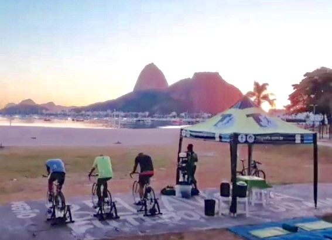
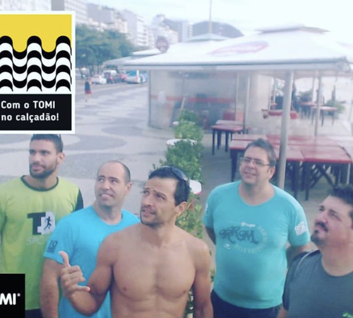
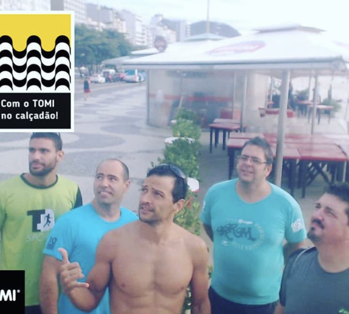
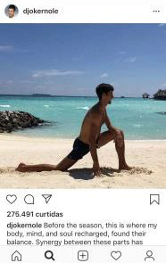

11 - Simulado
Já havia falado com o Tobias sobre a ideia de fazer o RioTriathlon na segunda quinzena de março e uma Meia Maratona (S21) em julho, mas não senti muita confiança na reação dele. De qualquer forma teria um simulado, junto com a acessória da Márcia Ferreira (MF Triathlon) no meio de fevereiro. Vamos ver como eu iria me sair.
Confesso que uma das coisas que eu mais gostei foi de usar o macaquinho de triathlon, deu a sensação que eu realmente era um triatleta.
Mas há uma diferença grande em parecer e ser.
O “treino” aconteceu no Aterro, que estava fechado para a realização de uma corrida. Natação, 750m no mar, 24 km de bike e 5,1km de corrida, distância adaptadas para os retornos no Aterro do Flamengo.
Entrei no mar sem pressa, fui literalmente o último a entrar, quase 5 minutos depois de todos (pude conferir no vídeo que fizeram). nadei bem, fiz em 20 min incluindo o tempo que eu fiquei parado na areia.
Transição para o ciclismo feita, sapatilha sem meias para acostumar.
Acredito que foi a minha pior parte 0:56:00, em alguns momentos tive que diminuir muito a velocidade devido a montagem dos pontos de hidratação da corrida.
A terceira parte era a que eu mais temia, mas acabei me surpreendendo com uma corrida para 30′ 43″ Pace médio de 5:58.
O Euzir me deu força no pedal e no final da corrida, mas acho que esse último foi só para sair na foto. Hehehe.
Simulado realizado, e a confiança para fazer a etapa do RioTriathlon aumentou.


(Treino dia dd/mm/aaaa)
dd/mm/aaaa
12 - Inscrição no RioTriathlon
Simulado realizado, achei que as inscrições para a prova de março já tinham se esgotado, até que alguém no grupo de WhatsApp, para motivar os outros, enviou a inscrição, não pensei duas vezes e fiz a minha, R$ 400,00 muito acima do valor das inscrições das corridas de rua, mas também a infraestrutura é bem maior.
Falei da inscrição para o Tobias com a seguinte colocação: “terminar eu vou, só não sei em quanto tempo”.
Seja o que Deus quiser, agora só tinha que treinar mais para melhorar o pedal.
Treino dia 19/02/2019
(25/03/2019)
13 - Primeiro Abandono de Treino
Quinta feira antes do carnaval, o treino era pedal no rolo mais tiros de 1km de corrida.
Fiz um pedal de médio para fraco já que alguma coisa não estava ajustada no rolo, e fui para a corrida, no primeiro tiro, me senti mal, estava ficando gripado, e resolvi abandonar o treino e não fui trabalhar.
Treino dia 28/02/2019
Na sexta fiquei de “molho” em casa. No sábado acordei melhor e fui fazer o treino de 8km no aterro, mas com a ideia na cabeça de se precisar para eu ia parar.
Com o tempo meio chuvoso, com o “descanso” de um dia, acabei fazendo o meu melhor tempo para essa distância, e ainda tive que desviar de um bloco de carnaval.
8km – 52:28 – Pace de 6:32 min/km
Treino dia 02/03/2019
(25/03/2019)
14 - Preparativos
Última semana antes da prova chegando e começaram os preparativos. Levei a roupa de Neoprene para fazer ajustes de tamanho, bike para a revisão.
Longão de sábado, 10km, mais uma vez o tempo estava chuvoso, e consegui fazer um tempo muito bom, pelo menos para mim. 1:02:46.
Tobias achou um tempo bom também.
Terminei a prova fazendo os 5,32 km em 35:24, mas o importante foi completar e correr com amigos.
Treino dia 16/03/2019
(25/03/2019)
5 - Correr + Bike
Primeira prova concluída, volume de corrida aumentando, comecei a olhar a Caloi 10 da minha esposa com outros olhos.
Fazendo um parêntese para uma volta no passado. Já falei que a minha primeira passagem pelas corridas não evolui por causa da canelite, mas não falei que a minha esposa evoluiu muito, e além das corridas de 5km e 10km fez um Triathlon Sprint (750m de natação + 20km de ciclismo + 5km de corrida), claro que isso tudo foi antes de engravidar do nosso primeiro filho.
Agora dá pra saber o porquê tínhamos uma Caloi 10 parada em casa. Bom, olhei a bike ela me olhou e eu resolvi coloca-la para na revisão e começar a pedalar em 2019.
(19/03/2019)
6 - Não é só para Contar as Vitórias.
Bike revisada, bermuda de ciclismo, sapatilha nova, vamos pedalar no rolo. Não sou nenhum maluco de já começar a pedalar no APCC (área de proteção ao ciclista de competição), 30 minutos leve para sentir a bike.
Fui para a praia de Botafogo me achando o ciclista, já com a sapatilha presa no pedal (clipado), mas quando eu parei a bike, tirei um pé do pedal....... cai para o outro lado. Foi uma das piores sensações que eu já tive, você cai em câmera lenta, e não tem o que fazer.
Chegando no treino estava com o cotovelo sangrando e para piorar a minha vergonha todo mundo perguntava o que aconteceu.
Na volta eu fui empurrando a bicicleta mesmo, e nos outros treinos fui com o tênis e só colocava a sapatilha na praia de Botafogo.
Treino dia 10/01/2019
(19/03/2019)
7 - Quase um Triatleta
Só me faltava a natação para me sentir um triatleta.
Desde sempre tive dor no ombro, mas nada que me impedia de fazer musculação ou outras coisas, mas essas dores estavam muito fortes, talvez pela mudança da forma de dormir, mais sobre os ombros evitando dormir de bruços e prejudicar ainda mais a cervical.
Essas dores eram as únicas coisas que estavam me separando da natação e de começar a treinar para o triathlon.
Fui num osteopata indicado pelo treinador, e o cara era fera, já na primeira consulta viu onde era o problema (pouco alongamento no peito) passou uns exercícios para melhorar e de quebra uma série de musculação para fortalecer o corpo todo. Na semana seguinte eu fui ao clube dar umas braçadas, e vi que já estava bem melhor, consegui nadar 1.000 metros sem sentir dor.
Treino dia 17/01/2019
Colocamos a natação nos treinos e comecei a nadar na praia de Copacabana, me senti mais confortável nadando no mar, talvez pela roupa de borracha que me deu mais flutuabilidade.
 

Treino dia 15/02/2019
(19/03/2019)
8 - Dor....
Nos treinos de maior distância, comecei a sentir uma dor na coxa nos quilômetros finais, achava que essas dores eram normais, até que um dia, num treino de 7km próximo da metade, senti a dor um pouco mais forte que o normal. Interrompi o treino e voltei andando (oh coisa mais chata…). Na primeira oportunidade liguei para o osteopata.
Resumindo não era nada, só o músculo se acostumando com o novo estímulo da bike e aprendi uns alongamentos novos.
O mais bacana é que vi no Instagram o Djokovic fazendo o mesmo alongamento. Acho que esse negócio funciona.
Treino dia 23/01/2019
(22/03/2019)
9 - APCC – 4:00 am
Conversando com alguns amigos de outras acessórias, eles sempre me falaram do APCC, pedalada no aterro do Flamengo de madrugada.
Depois de treinos no rolo, e de duas saídas para pedalar, uma em subindo a rua Alice e outra num domingo no aterro, resolvi de aventurar e debutar no APCC.
Treino de 1 hora/26 km, depois ainda teve 5km de corrida. Porque terça é dia de transição.

A parada é muito boa mesmo, além de você ficar motivadocom os outros ciclistas, ainda dá para ter uma noção de como é pedalar em prova.
A única coisa de me deu um “cagaço”, e ainda dá, é a ida para o aterro e principalmente a volta, onde tem muito carros na rua.
Acordar as 3:30 AM, para começar a treinar as 4:00am não é problema. O que foi difícil foi passar o dia todo acordado e ainda cuidar das crianças a noite.
Treino dia 29/01/2019
(23/03/2019)
10 - Fugindo da Planilha
Treino de sábado que virou de domingo. Corrida de 8km que acabou crescendo e se tornou meus primeiros 10km.
No primeiro filho se participa de tudo, todas as consultas pré-natal, consultas do pediatra, aulas de música, natação etc. Já o segundo as coisas já não são tão novidades e acabamos relevando algumas coisas. Por que eu estou falando isso se a história é sobre Triathlon e não sobre ser pai? Porque no sábado ia ser a aula experimental de natação da minha filha mais nova, e eu não queria perder. Então passei o treino de sábado para o domingo, programei para correr na lagoa Rodrigo de Freitas (7,5 km) e depois aproveitar o clube com a família.
Plano realizado. Vamos correr!! Mas uma coisa não saia da minha cabeça, se eu ia fazer 7,5km + 0,5km para completar os 8, por que não continuar mais um pouco e fazer 10k?
Passei cada km da lagoa pensando nisso, mas também ciente de que se não iria forçar só para fazer os 10km.
Consegui completar a lagoa, e continuar pra fazer os 10km. O ritmo desabou no final, principalmente nos 3 últimos quilômetros, mas tinha conseguido romper a barreira dos 10.
(Treino dia 03/02/2019)
- 6,26 min/km
- 6,32 min/km
- 6,28 min/km
- 6,17 min/km
- 6,53 min/km
- 7,06 min/km
- 6,42 min/km
- 7,11 min/km
- 7,17 min/km
- 7,43 min/km
(23/03/2019)